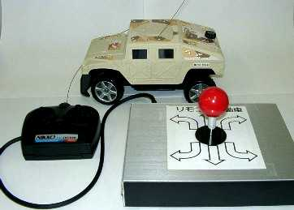
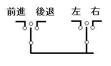
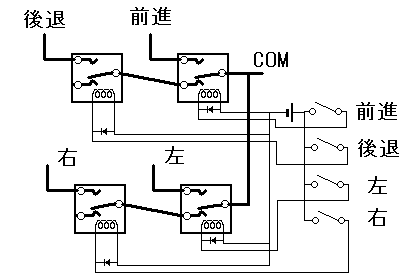
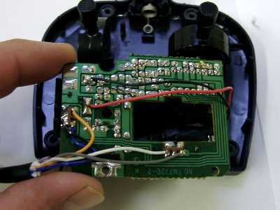
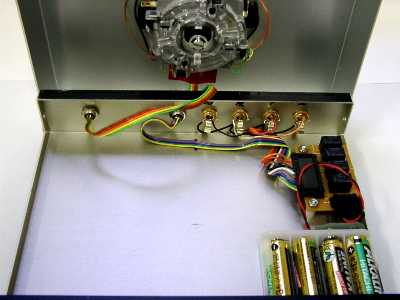
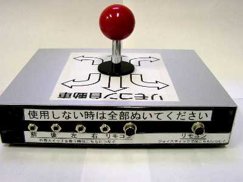

かならずお読みください→
リモコン自動車の改造

ここでご紹介するおもちゃは，株式会社ニッコーの Offroad Sports Gear HUMVEE （ハンビー）です．米軍の軍用車輛とおぼしき外見のおもちゃを無線で前進，後退，左右の舵取りを操作します．このおもちゃも子供に人気があります．
しかし，標準のリモコンは，小さく，両手での操作が必要なため，使いこなせない場合もあるそうです．また，ジョイスティックの操作が難しい場合もあるそうです．さらに，自動車があまりに速く動くので，見失ってしまうそうです．
今回は，このような問題点を解決する改造を行います．
材料
�@三和電子（株）， ジョイスティック（JFL-TM-8），１個，参考価格4200円 直接買えばもっと安い
（購入先，（株）横山商会富山営業所，TEL：076-423-8500）
三和電子（株） 〒173-0034 東京都板橋区幸町２０−１５
TEL：03-3959-6611(代) E-mail;sanwa3@mb.infoweb.ne.jp http://www.sanwa-d.co.jp/（通販あり）
秋葉原の千石電商、アイコー電子などいくつかの店で扱っているらしい．
千石電商は通信販売もしているらしい．
（株）千石電商 千代田区外神田１−８−５ TEL：03-3253-4411
�@（株）タカチ電機工業，ＹＭ型薄型ボックス（YM-200），１個，参考価格1180円
（購入先，マイコンビル無線パーツ富山店など）
コネクタ類
�@ヒロセ電機，プラグ（HR10A-7P-6P），１個，参考単価680円
�@ヒロセ電機，レセプタクル（HR10A-7R-6S），２個，参考単価320円
補足：これらのコネクタは単に手持ちの部品を使っただけです．要は５本の配線をつなげるコネクタであれば他の種類でもかまいません．
�@サトーパーツ，ＵＳ型ジャック（PJ-2240-J），４個，参考単価100円
（以上コネクタ類，購入先，（株）横山商会富山営業所，076-423-8500）
その他電子パーツ店などで入手可能です．
参考：これは，直径3.2mmの２極ジャックです．ジェリービーンスイッチなどはそのまま使えます．このジャックに対応するプラグは，サトーパーツ，US型プラグ（PJ-2240-P）参考単価100円です．スイッチを製作する場合にはこれをつかいます．
�@オムロン，マイクロリレー（形G5V-1，5V），４個，参考単価230円 （技術資料はここから入手可能）
（購入先，（株）電陽社富山営業所，TEL：076-432-7588）
�@電池ボックス，単３四本用，１個，各100円位
（購入先，マイコンビル無線パーツ富山店）
�@可変抵抗（ありあわせ）
�@その他，ネジ類，汎用基盤，電線など小物部品
工具
ドリル，はんだごて，ハンダ，ドライバ，ヤスリ，テスタなど
作業手順
１ 回路について

回路を見るためにオリジナルのリモコンを分解して見ました．それが上図です．
スイッチはごく簡単なものです．（単極双投 ON-OFF-ON で中立に保持されます．）これが2組あり，各スイッチの操作で，前進／後退，ハンドルが左／右を切り替えます．
次に改造に使用する，三和電子（株），ジョイスティック（JFL-TM-8）は，１Ｃタイプのスイッチを４個使ったものですので，上と同じ回路を構成できます．また，ここで使用するジョイスティックでは，前進の操作と後退の操作を同時にするのは，機構的にできませんので，この点も安心です．
しかし，外部スイッチで操作する場合は，このような問題が起こる可能性が十分あります．よって，リレーを使った下の回路でこれを防ぎます．つまり外部スイッチで，前進と後退の操作を同時にしたときには，後退の回路は自動的に切れます．

基本的には図のようにダイオードを入れますが，今回の場合はなくてもよいようです．
２ リモコンの改造

標準のリモコンを分解し，内部の基盤から配線を取り出します．まとまりを考えて，多心の電線を使用しました．
３ 組み立て作業について
ボックスに部品を組み込む前に，仮の配線をして動作を確認します．その後ユニットごとにボックスに組み込んでいくのがよいでしょう．ボックスの穴明け作業などの説明は，ここでは省略します．使っている部品などジャイアントクレーンの時とほとんど同じです．

ボックスに組み付けたところです．
右の単三電池は，リレー駆動用です．リレーの定格は５Ｖですが，電池がもつように４本使用しています．（多分大丈夫でしょう）

ボックス背面の写真です．
背面にあるコネクタは，左の４個が，サトーパーツ，ＵＳ型ジャック（PJ-2240-J）．右の２個がヒロセ電機，レセプタクル（HR10A-7R-6S）です．リモコンにつながる配線には，ヒロセ電機，プラグ（HR10A-7P-6P）をつけ，ジョイスティックで操作する場合は右に，外部スイッチで操作する場合は左に差し込んで使用します．
４ 外部スイッチについて
外部スイッチとしてジェリービーンスイッチなどが使えますが，一番工夫の必要な部分が外部スイッチです．おもちゃを使う人に合わせて選ぶ必要があり，場合によっては特注品や自分で製作することも必要かもしれません．
今回使用した，サトーパーツ，ＵＳ型ジャック（PJ-2240-J）は，多くの市販スイッチに対応しています．自作する場合もサトーパーツ，ＵＳ型プラグ（PJ-2240-P）などを使用するとスイッチの使い回しが可能になります．
５ 自動車の速度を下げる
自動車の速度を変更する方法には，モータの速度を変更するか，ギアを変更するかが考えられます．（おもりを引きずらせ，その抵抗で速度を落とす方法もありますが．．．） 一般的にギアの改造はコストがかかりますのでやめました．
直流モータの速度を制御する方法にはいくつかあるのですが，一番安価にできる方法として，抵抗を入れてトルクを落とすことにしました．しかしこの方法では，走行速度が大きく下がるほど抵抗を大きくすると，発進ができなくなってしまいます．今回も固定抵抗と可変抵抗を使い，ある程度の速度調整ができるようにしましたが，あまりよい方法とは言えないようです．どなたか安くて良い方法をご存じでしたら教えてください．
予測される危険性
このような改造をすると多くの場合，メーカ保証の対象から除外されます．故障しても修理してもらえなくなることを覚悟してください．
特に取り扱いが難しい部品もありませんし，感電するような電圧もありません．ハンダごてでやけどしないように気をつけるくらいでしょう．
何がどうこわれても，おもちゃの自動車が動かなくなるだけです．最悪の場合でもかけたお金と時間が無駄になるだけです．
ひとこと
ここで紹介したリモコン自動車は以前のジャイアントクレーンと違い，全国どこでも入手できると思います．
また，前進／後退と左右のハンドル操作を行いますので，ジャイアントクレーンよりすこし操作が難しいおもちゃです．このおもちゃもコースをつくったり，障害物を置くなどして遊び方の工夫ができるよいおもちゃだと思います．とかく飽きやすい子供相手にはこれが大切なことのようです．
今回ご紹介したような方法は，いろいろなものに応用できると思います．興味をお持ちの方は，トライしてみてください．大切なことは，原理を理解し，それを他の方法で実現することです．
03/05/15 公開
研究企画課リハ工学科にもどる